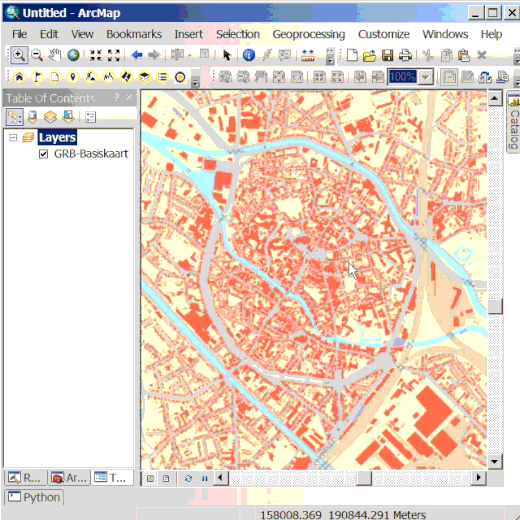

Met deze tool kan je naar interesse punten (POI: Points of Intrest) in de geopunt POI-diensten zoeken. Je kunt kiezen kiezen om je zoekresultaten te beperken tot het huidige zoomniveau of een specifieke gemeente. Verder kan je ook filteren op Thema/Categorie/Type en op specifieke zoektermen.
Er wordt een tabel met gevonden POI's weergegeven, inclusief de naam, de categorie en het correcte crab-adres. Er worden maximaal 32 resultaten getoond.
Je kunt in de resultaattabel gegevens selecteren om ze te doen oplichten op de kaart. Als je klikt op de knop Zoom naar selectie kan je naar de geselecteerde objecten zoomen.
Via de knop Selectie opslaan kan je de geselecteerde objecten toevoegen als een kaartlaag, die je kunt gebruiken voor analyses of cartografie. Je kunt opslaan naar Shapefile of File geodatabase.
Als er meer dan 32 resultaten zijn, kan je alle POI’s toevoegen die voldoen aan de criteria met de knop Alle punten opslaan. Dit is een versie met minder attribuutdata en indien er meer dan 1000 punten zijn, zal een gedeelte geclusterd worden.
De POI-zoekdienst van geopunt ontsluit het POI overheidsaanbod, aangevuld met POI's van de commerciële provider HERE (het vroegere navteq). De publieke POI’s mogen hergebruikt worden, de HERE POI’s niet.
